Build a CI/CD pipeline where security checks are enforced automatically. The pipeline must block releases when security rules are violated and produce evidence that security controls were applied.
Platform: GitLab CE (self-hosted on Docker) | Application: Daily Pulse PWA (HTML/CSS/JS + nginx)
Infrastructure: VM1 (GitLab + Postfix) — VM2 (Runner) — VM3 (Deploy server)
Create a repository and configure a pipeline that runs on pushes to the main branch. The pipeline must check out the code, install dependencies, build the project, and run tests. The run must fail if tests fail.
st19-gitlab) on VM1 at http://st19.sne.com, with Postfix mail relay alongside it.root/st19-repo was already created and contained the Daily Pulse PWA application (HTML, CSS, JS, Dockerfile, Ansible playbooks).st19-runner) was registered and online on VM2 (runner.st19.sne.com)..gitlab-ci.yml pipeline was already configured with 5 stages: build, test, docker-build, docker-push, and deploy. It triggers on pushes to main and develop branches.index.html and Dockerfile exist — if either check fails, the pipeline fails, blocking further stages.docker build -t st19-spa . and then docker run -p 8080:80 st19-spa.main (Pipeline #12) completed successfully, confirming the foundation works.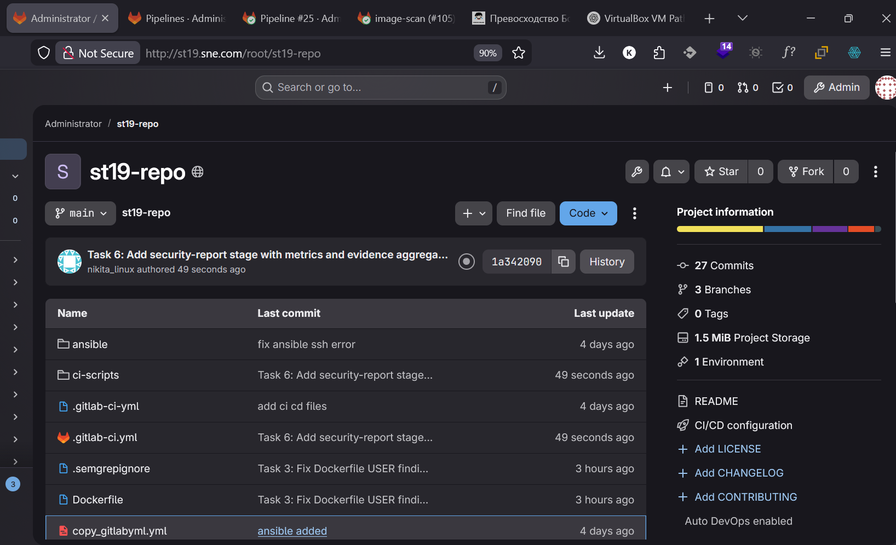
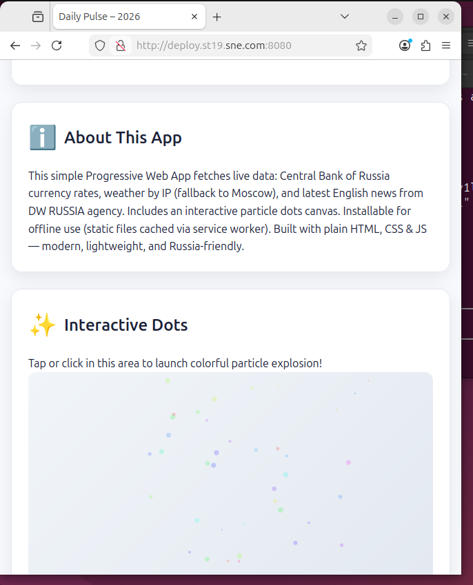
Add a secrets scanning step to the pipeline and configure it to fail the run when hardcoded credentials are detected. Store all pipeline credentials in the CI platform's secret manager and ensure they never appear in logs.
security-scan stage was added to the pipeline as the first stage, running before build/test/deploy. This ensures secrets are caught before any code is built or deployed.zricethezav/gitleaks:latest) on the runner, scanning the entire project directory with --no-git mode and producing a JSON report.DOCKER_HUB_USERNAME, DOCKER_HUB_PASSWORD) were already stored in GitLab CI/CD Variables with the masked flag enabled, ensuring they never appear in job logs.config.js was committed containing a fake GitHub Personal Access Token (ghp_ABCDEF...). Pipeline #16 FAILED — Gitleaks detected 1 leak and blocked all subsequent stages (build, docker, deploy were all skipped).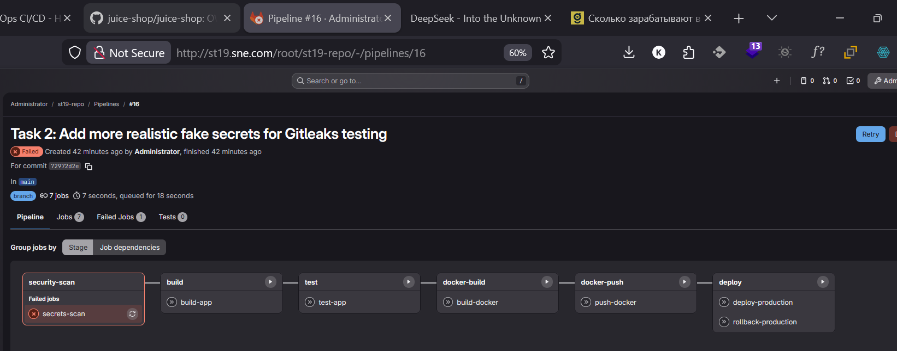
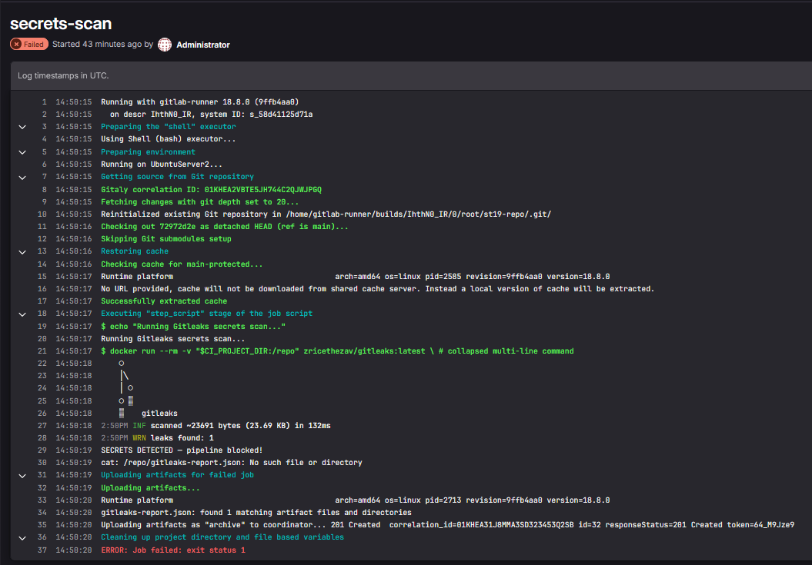
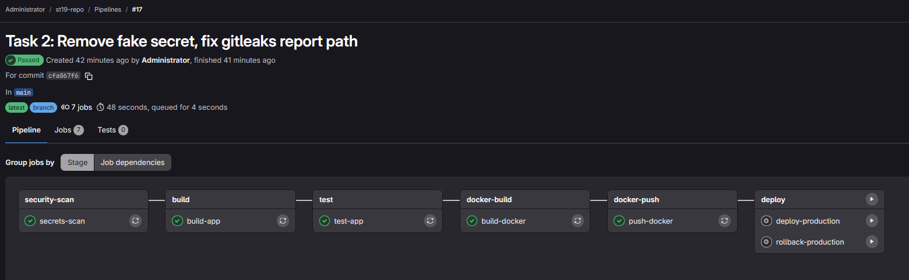
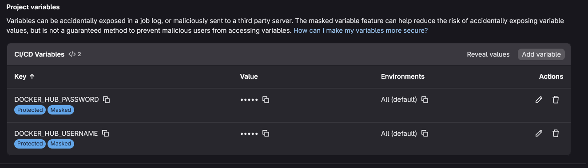
Add a SAST job that analyzes the source code after the build. Configure the tool for your language and define a quality gate that fails the pipeline when critical or high-severity issues are found.
sast stage was added to the pipeline, running after security-scan (Gitleaks) and before build. The Semgrep tool was chosen as the SAST scanner, running via Docker (semgrep/semgrep:latest) with --config=auto to enable all community rules for JavaScript, HTML, and Dockerfile.semgrep-report.json) saved as a pipeline artifact. A custom Python script (ci-scripts/sast-check.py) parses the report and enforces the quality gate: the pipeline fails when any ERROR-severity (critical/high) finding is detected.Dockerfile:7 — Container runs as root (no USER directive)script.js:25 — innerHTML usage (potential XSS via .innerHTML)script.js:52 — innerHTML usage (potential XSS)script.js:106 — innerHTML usage (potential XSS)USER nginx directive and reconfigured nginx to run on port 8080 as non-root.// nosemgrep annotations, as they process data from trusted APIs (CBR, Open-Meteo) and do not accept user input.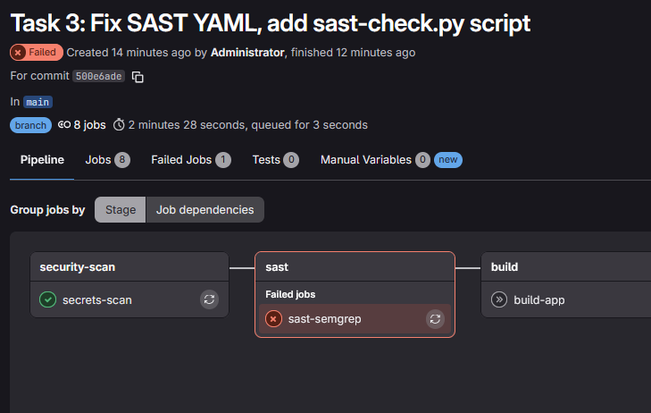
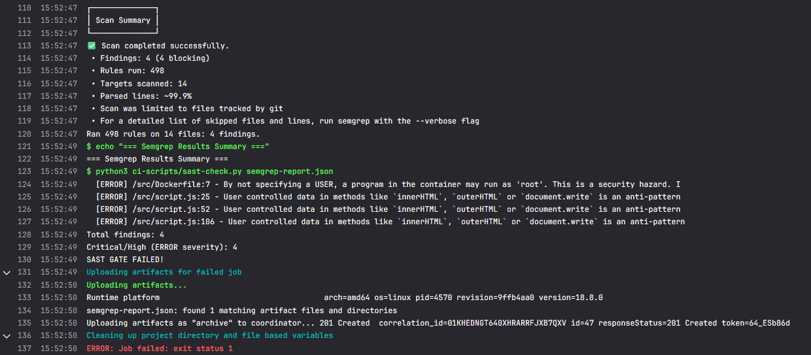
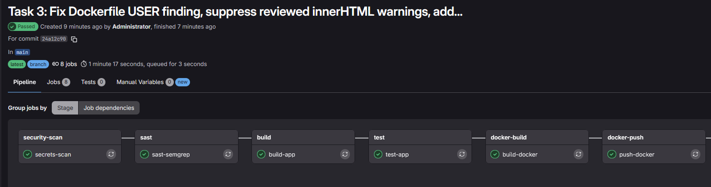
Add a dependency-scanning stage that runs on the same codebase. The tool should report known vulnerabilities (CVEs) and license issues.
sca stage was added using Trivy (aquasec/trivy:latest) in filesystem scan mode. Trivy scans package-lock.json to identify known CVEs in npm dependencies.package.json was created with express@4.17.1 and lodash@4.17.20 as dependencies. A package-lock.json was generated to resolve the full dependency tree.ci-scripts/sca-check.py) parses the Trivy JSON report and enforces the policy: fail on CRITICAL or HIGH, warn on MEDIUM/LOW. The Trivy report is saved as a pipeline artifact.CVE-2021-23337 — lodash command injectionCVE-2022-24999 — qs prototype poisoningCVE-2024-45296 — path-to-regexp ReDoSCVE-2024-45590 — body-parser DoSCVE-2024-52798 — path-to-regexp ReDoSCVE-2025-15284 — qs DoSexpress 4.17.1 → 5.1.0 and lodash 4.17.20 → 4.17.21. The lockfile was regenerated.CVE-2025-13465, lodash prototype pollution with no patch available yet). The SCA gate was satisfied since no CRITICAL/HIGH issues were present.package.json and regenerating the lockfile.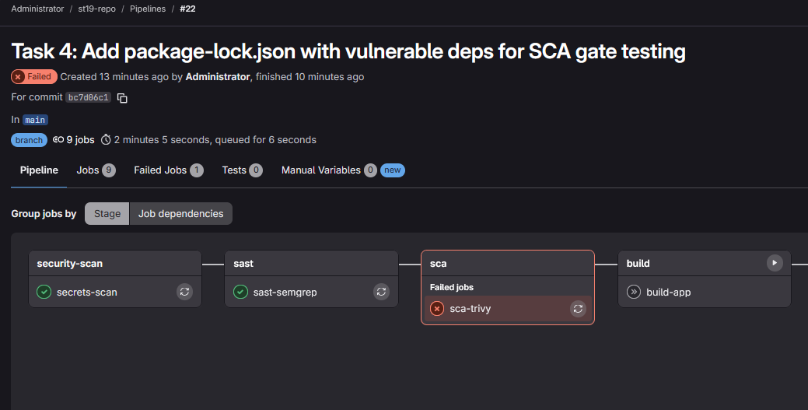
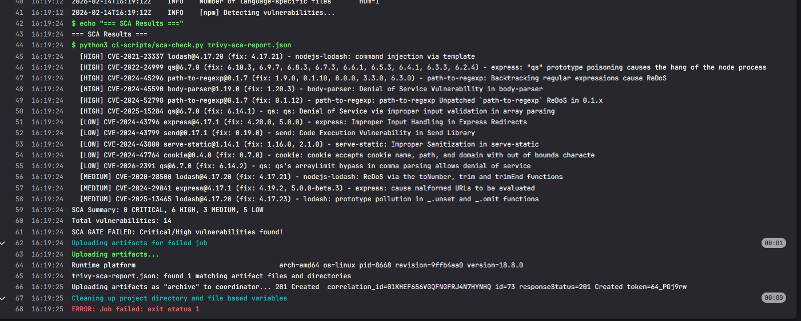
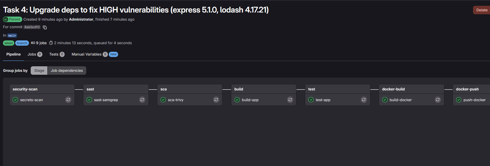
Build a container image and scan it for vulnerabilities. Fail the pipeline on critical or high findings.
image-scan stage was added to the pipeline, running after docker-build and before docker-push. This ensures that only scanned images are pushed to the registry and deployed.${CI_COMMIT_SHORT_SHA}) for full traceability from image back to source code.aquasec/trivy:latest) was used in image scan mode, accessing the Docker socket to scan the locally built image. A persistent Docker volume (trivy-cache) was configured to cache the vulnerability DB across pipeline runs, avoiding repeated 85 MB downloads.ci-scripts/image-check.py) parses the Trivy JSON report and enforces the policy: fail on CRITICAL vulnerabilities, warn on others. The report is saved as a pipeline artifact.nginx:alpine-based image and found 0 vulnerabilities (Alpine 3.23, 72 packages). The image security gate passed.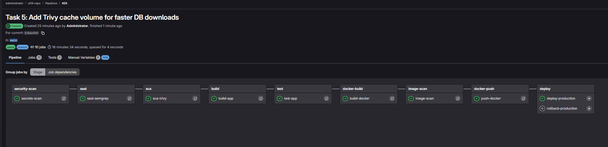
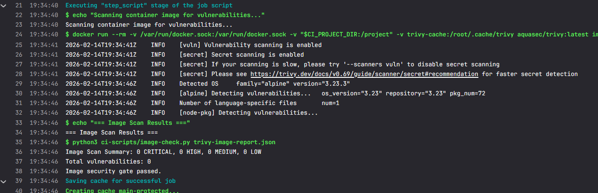
Configure the pipeline to retain security reports as artifacts. Define at least three metrics that measure security effectiveness.
security-report stage was added as the final stage of the pipeline. It collects all security scan artifacts from previous stages (Gitleaks, Semgrep, Trivy SCA, Trivy Image) and generates a consolidated JSON summary report (security-summary.json).gitleaks-report.json — Secrets scan resultssemgrep-report.json — SAST findingstrivy-sca-report.json — Dependency vulnerability scantrivy-image-report.json — Container image scansecurity-summary.json — Aggregated summary with metrics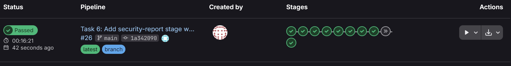
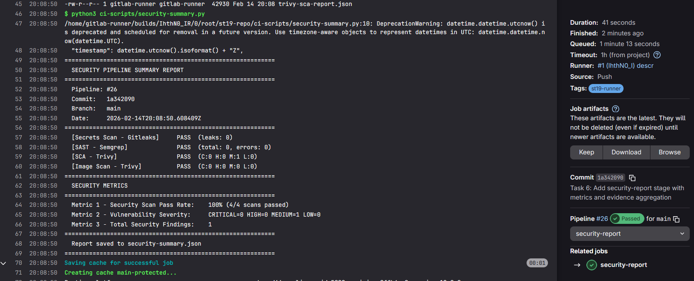
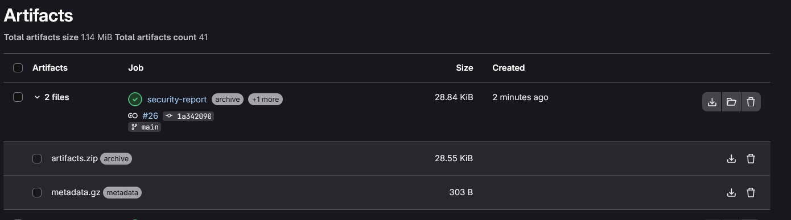
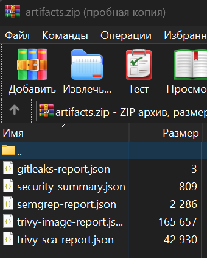
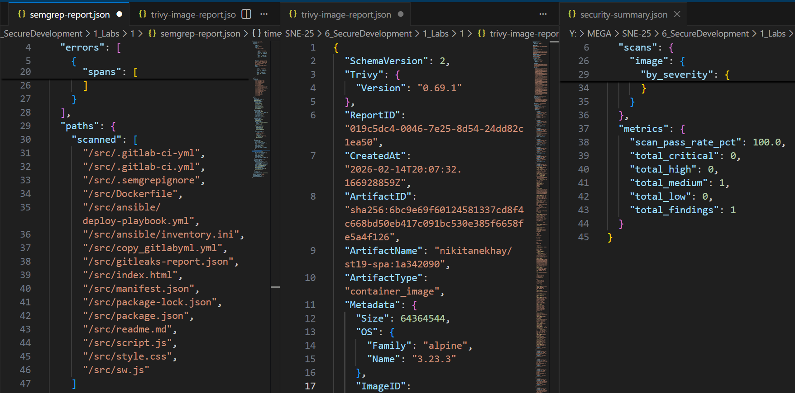